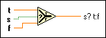

Select Function
Owning Palette: Comparison Functions
Requires: Base Development System
Returns the value wired to the t input or f input, depending on the value of s. If s is TRUE, this function returns the value wired to t. If s is FALSE, this function returns the value wired to f.
The connector pane displays the default data types for this polymorphic function.

 Add to the block diagram Add to the block diagram |
 Find on the palette Find on the palette |